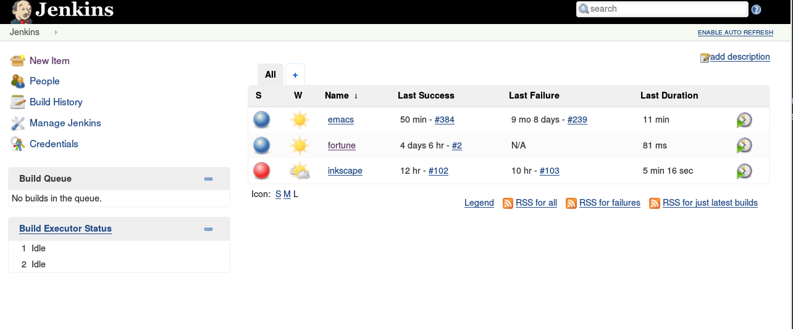
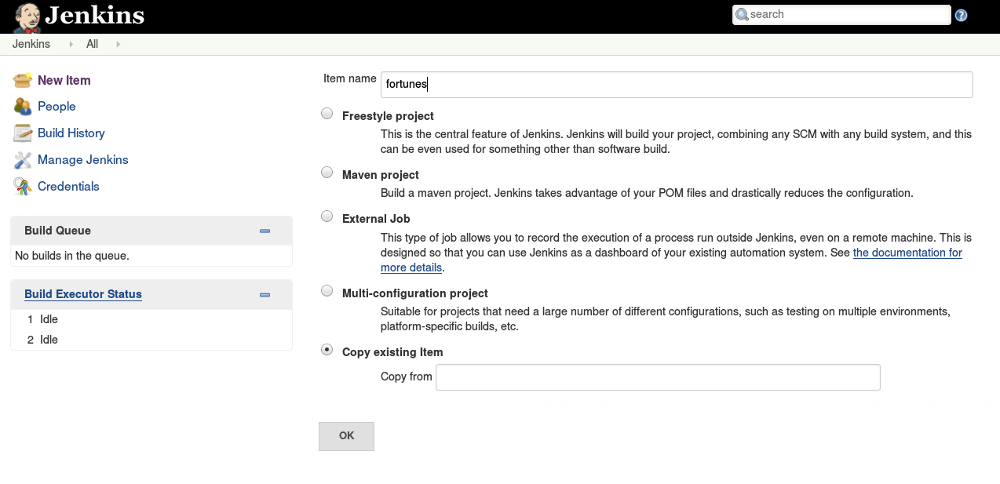
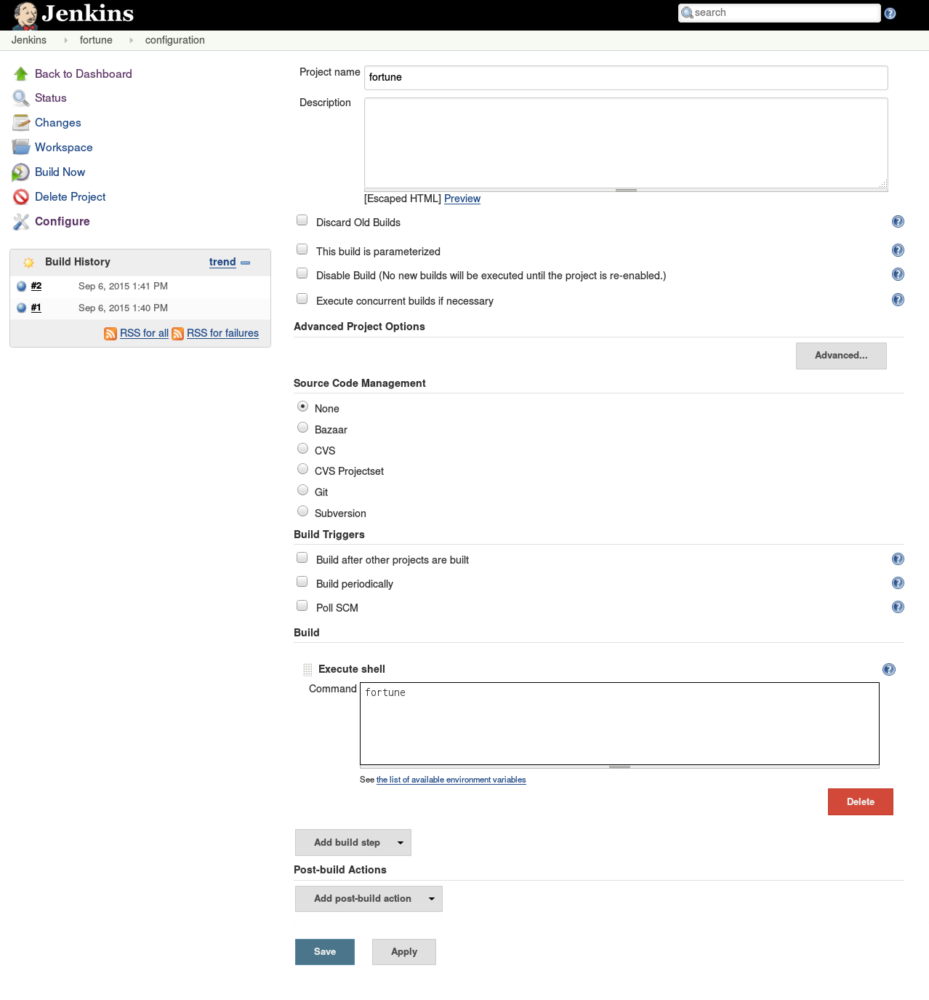
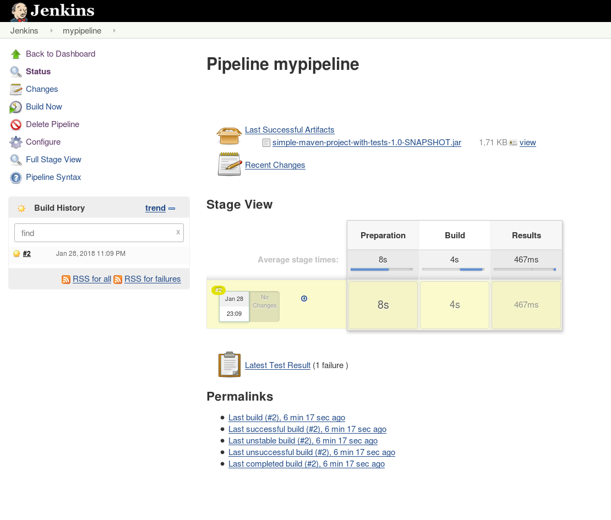
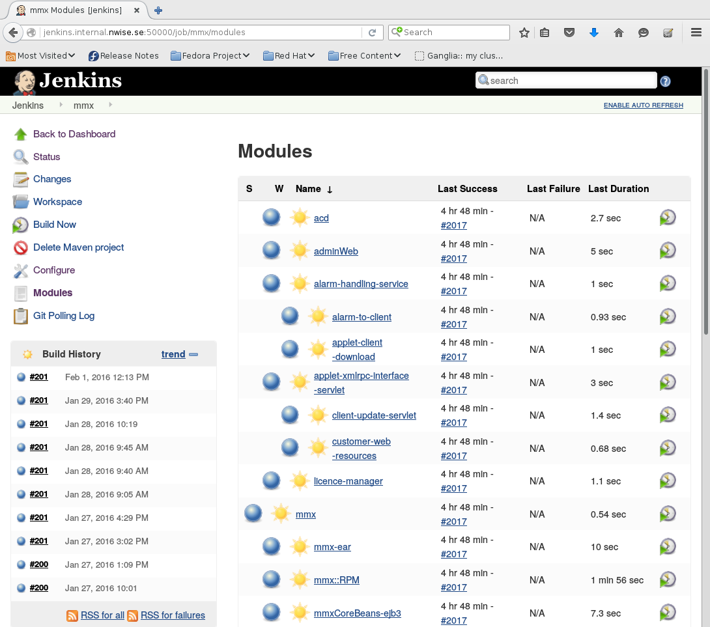
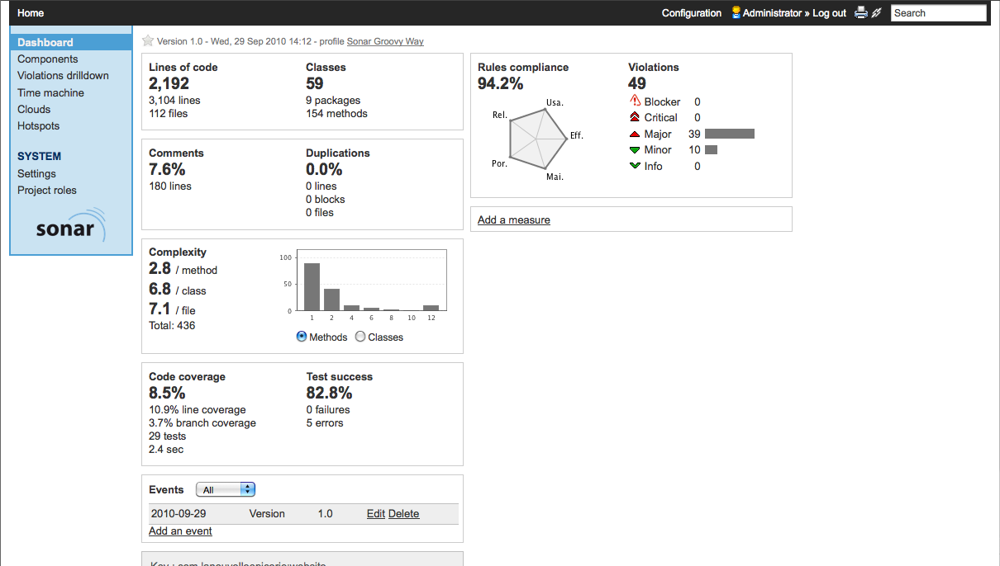

You need a system to build your code, and you need somewhere to build it.
This chapter explores build systems, validation tools, and artifact generation.
Building code transforms source code from one form to another for execution or deployment.
The term linting comes from the Unix tool lint, created to find bugs that compilers miss.
These languages may not require compilation but still benefit from:
There are many build systems that have evolved over the history of software development. Sometimes it may feel as if there are more build systems than programming languages.
Depending on your organization and products, you may encounter many different build tools. Some organizations even create their own.
Attempts to standardize build tools often conflict with the reality that tools exist for specific reasons:
Different tools exist because they solve different problems. One tool cannot work efficiently for every language.
Organizations typically standardize on one ecosystem (e.g., Java & Maven, Ruby & Rake). Additional build systems appear for native or third-party components.
We cannot assume:
Companies often prefer one main tool for consistency, but they still end up using others for special cases.
A company using Java might standardize on Maven, but still use Make for third-party C libraries.
It should be possible for a developer to check out the code and build it locally with minimal surprises.
This implies:
If multiple build systems exist, one can be wrapped inside another. This hides complexity and allows consistent developer workflows.
Example:
mvn clean install To build a Java desktop installer using Nullsoft Scriptable Install System (NSIS) Windows installation system:
While Java desktop apps are no longer fashionable, they remain popular in some domains.
A build server automatically builds software based on various triggers. Jenkins is one of the most popular build servers available.
Jenkins began as a fork of the Hudson build server. Kohsuke Kawaguchi, the main Hudson contributor, started Jenkins after Oracle acquired Hudson in 2010.
Today, Jenkins is the more widely used and active project.
Although Jenkins has strong support for Java projects, it can build virtually any kind of software:
Setting up Jenkins on Ubuntu is straightforward. Install Jenkins using apt:
sudo apt update
sudo apt install openjdk-17-jre
wget -q -O - https://pkg.jenkins.io/debian-stable/jenkins.io.key | sudo apt-key add -
sudo sh -c 'echo deb https://pkg.jenkins.io/debian-stable binary/ > /etc/apt/sources.list.d/jenkins.list'
sudo apt update
sudo apt install jenkinsJenkins runs as a system service on Ubuntu:
sudo systemctl start jenkins
sudo systemctl enable jenkins
Once Jenkins is running, you can access the web interface at:
http://localhost:8080

Jenkins jobs are the core units of work (or "project").
A job is a set of instructions that Jenkins executes — like running a build, a script, tests and how logs are stored.
Let's create a basic Freestyle job that prints the current date.

date
This command prints the current system date/time when the job runs.

To test the job:
You will see output similar to:
Wed Feb 12 14:35:12 IST 2025
Jenkins keeps a complete record of previous executions:
The date command is installed by default on all Linux systems.
If you want an alternative output, you can use:
echo "Build executed successfully"
Build dependencies are the external tools, libraries, and packages required to compile or run software during a CI build.
In our simple example, we only printed a date to the Jenkins log, but Real-world builds rely heavily on dependencies.
Installing and maintaining these dependencies is a major responsibility when operating a CI server.
Some build tools explicitly list their dependencies, making them easier to manage:
C/C++ projects often use GNU Autotools, which take a different approach:
When building Emacs, a configuration script detects available libraries:
This flexibility is useful but not ideal in enterprise builds where consistency is required.
Enterprises need deterministic builds:
Red Hat–based systems use the RPM (Red Hat Package Manager) system to solve dependency issues.
The core component is the spec file (specification file), which:
A spec file provides reproducibility because:
This results in predictable, enterprise-grade builds.
The output of a build process is a deployable artifact. Different build systems and platforms produce different types of artifacts.
These are the files we later deploy to production servers.
This chapter focuses on building artifacts.
Actual deployment will be covered later in Chapter 7 – Deploying the Code.
Even while building, we must understand how deployment works.
General guideline:
Operating system–level packaging is preferable to specialized packaging.
This provides consistency across technologies and environments.
Several deployment strategies exist:
Most organizations use mixed architectures:
OS-level packaging tends to work more universally across these systems.
In practice mixed environments where Unix servers coexist with Windows servers
This is an observation, not a recommendation.
in this case OS Packaging Might Not Be Best
Another option is to deploy software using container technologies such as Docker.
Containers package the application with its dependencies, providing a portable runtime environment.
FPM is a powerful Ruby-based tool that can quickly generate OS packages (RPM, DEB, etc.) without writing full spec files.
Spec files are ideal for production-grade packaging but can be complex.
FPM offers a faster, easier alternative for package creation:
FPM can be installed using Ruby’s gem system:
sudo apt update
sudo apt install ruby ruby-dev gcc make rubygems
sudo gem install --no-document fpm
This installs the fpm command-line tool.
Create a simple shell script:
#!/bin/sh
echo "Hello World!"
We want this installed under /usr/local/bin.
Create the directory layout FPM will package:
mkdir -p ~/hello/usr/local/bin
cp hello.sh ~/hello/usr/local/bin/
chmod a+x ~/hello/usr/local/bin/hello.sh
Use FPM to generate a Debian package:
cd ~/hello
fpm -s dir -t deb -n hello-world -v 1 -C . usr
This produces hello-world_1.deb.
Inspect the package:
dpkg -I hello-world_1.deb
Install the package:
sudo dpkg -i hello-world_1.deb
The script is now installed in /usr/local/bin.
It offers a simple way to package software quickly.
Continuous Integration ensures that every code change triggers an automated build to verify quality and detect issues early.
With many developers contributing, it’s critical to verify that all changes work together.
CI validates combined work through integration tests.
If developers avoid merging for too long, branches diverge significantly.
This causes:
The Root cause of merge hell is often, perhaps surprisingly, psychological
A goal of DevOps is to reduce friction for important activities such as merging and testing.
CI encourages frequent check-ins, reducing the risk of divergence.
CI builds are more rigorous than local builds:
Modern hardware is powerful and relatively inexpensive.
This allows CI servers to run intensive builds quickly.
Fast builds encourage developers to:
If the builds are fast enough to not be seen as tedious, developers will be enthused to check in often, Then.
Frequent integration avoids merge hell and keeps development smooth.
Continuous Delivery is the step that comes after Continuous Integration(CI). It ensures every successful build can be deployed any time..
Continuous Delivery ensures smooth and reliable software deployment.
Jenkins has a powerful and extensible plugin system that allows you to add new features to the build server.
These represent the diversity of Jenkins integrations.
For our CI workflow, the Git plugin is essential.
Our sample organization uses Clojure, so Jenkins needs support for Clojure builds.
lein commands directlyThe Pipeline plugin is one of the most important components in modern Jenkins setups. It enables the creation of complex CI/CD workflows using code.
The build server is a critical machine in any organization. It handles the resource-heavy task of building software, which requires:
Since builds are processor, memory, and disk intensive, a powerful host ensures builds don’t take too long and developers remain productive.
The build server also has a social aspect — it is the place where code from many developers integrates for the first time. Faster servers encourage frequent integration and reduce bottlenecks.
Machines are cheaper than people, so the build server is not the place to cut costs. Invest well to avoid delays and inefficiencies.
To reduce build queues, Jenkins allows adding build slaves. The master server distributes builds to slaves using round-robin scheduling or by assigning specific jobs to specific slaves.
This is especially useful when different builds require different operating systems or tools.
Example: A Linux master can use Windows slaves for Windows builds or a Mac slave for macOS-specific components.
Build slaves must allow the Jenkins master to issue commands. Common methods:
More details: Jenkins Distributed Builds documentation.
Sometimes it's easier to compile for a different OS using cross-compilers. For example, Linux can build Windows binaries using MinGW.
Sometimes installing a Windows build environment is harder or slower than compiling from Linux.
A big system usually comprises many different parts, and some of the parts might contain native code for different platforms.
All code—especially native components—must be buildable on the CI server. Otherwise, critical parts may only compile on a random developer’s machine, which is risky and hard to maintain.
Each organization has different needs, and only your team can determine what platforms and build environments are required.
Depending on the complexity of your builds, the build server may need to have many different build tools installed. Jenkins usually triggers the build, while the actual compilation is handled by tools such as Maven, Gradle, Make, or Golang build systems.
In practice, it is most convenient to run Jenkins on a Linux-based host. Linux distributions include a wide library of build tools in their repositories, making installation and updates extremely easy.
You can use the same deployment and patching systems that maintain your production servers to keep the Jenkins host up to date.
This ensures consistency, security, and predictable environments across all servers.
Jenkins can automatically install some builder tools on build slaves—such as Maven—when supported by the appropriate plugin.
This is convenient, but it only works when the builder has Jenkins integration. Many build tools must still be installed manually on the host OS.
Jenkins jobs can be started automatically through various trigger mechanisms. These help ensure that builds happen consistently and at the right time.
In many workflows, both polling and timers are used:
Jenkins allows jobs to be connected so that one job triggers another when it completes. This is known as job chaining.
Chaining jobs works for simple workflows, but complex CI/CD processes need more flexibility and better visualization.
A pipeline provides:
Several Jenkins plugins enhance build pipeline capabilities:
The Pipeline plugin is the most advanced and uses a Groovy DSL. Pipelines can be stored in a Jenkinsfile inside Git.
This pipeline fetches a Java application from GitHub, compiles it with Maven, runs tests, builds a JAR, and packages it into a .deb using FPM.
pipeline {
//agent any
agent { label 'linux' }
tools {
jdk 'jdk21'
maven 'maven3'
}
stages {
stage('Checkout Code') {
steps {
git url: 'https://github.com/laxmi916/hello-java.git', branch: 'master'
}
}
stage('Compile') {
steps {
sh 'mvn clean compile'
}
}
stage('Test') {
steps {
sh 'mvn test'
}
}
stage('Package') {
steps {
sh 'mvn package'
}
}
stage('Create JAR Artifact') {
steps {
sh 'cp target/myapp-1.0.jar build/'
}
}
stage('Build .deb Package') {
steps {
sh '''
mkdir -p pkg/usr/local/bin
cp build/myapp-1.0.jar pkg/usr/local/bin/
fpm -s dir -t deb \
-n myapp \
-v 1.0 \
-C pkg \
usr/local/bin/myapp-1.0.jar
'''
}
}
}
post {
success {
echo 'Pipeline completed successfully!'
}
}
}
Jenkins provides a graphical view of the pipeline stages as it executes. This helps track progress and diagnose failures.
Example pipeline UI:

Understanding Jenkins’ directory structure helps in backup, debugging, and storage management.
On Linux installations such as Fedora or Ubuntu, Jenkins stores job definitions here:
/var/lib/jenkins/jobs
Jenkins is powerful, but it sometimes differs from the DevOps philosophy that infrastructure should be defined as code.
.gitlab-ci.ymlIn Make, dependencies are written explicitly:
a.out : b.o c.o
b.o : b.c
c.o : c.c
This means b.o and c.o must be built before a.out.

Each row in the screenshot represents:
Examples: acd, adminWeb, alarm-handling-service, customer-web-resources, etc.
These correspond to modules defined in the Maven pom.xml:
<modules>
<module>adminWeb</module>
<module>acd</module>
<module>alarm-handling-service</module>
...
</modules>
Indicates overall build health of each module:
This icon reflects the module's build history, not the parent job.
Maven provides a standardized build lifecycle, which is one of its biggest advantages.
This helps large organizations by eliminating the need to define custom build standards.
Other tools like Ant or Make are more flexible, but lack a strict structure.
Maven enforces an order of phases such as:
This rigidity can feel restrictive, but ensures consistency across teams.
The testing phase is crucial in any CI/CD pipeline.
A CI server must detect errors early, and automated tests make this possible.
Testing will be explored in more detail in a later chapter.
While Jenkins is widely used and dominant in many organizations, it is not the only option.
Several other build server solutions exist:
Before selecting a build server, consider:
Beware of vendor lock-in.
A build server does not replace proper local builds.
Developers must ensure:
Prefer build servers that support:
Tools relying only on graphical user interfaces are harder to automate and maintain.
A build server like Jenkins can collect and display software quality metrics.
SonarQube provides deeper code quality analysis:
Typical Sonar metrics visualized on dashboards:

A build server generates a lot of useful data that can be displayed visually for the team.
The simplest visualization method is to use a monitor running Jenkins in a web browser.
Jenkins plugins designed for shared displays:
Purpose: Make build health visible to everyone.
Many teams use hardware connected to build status:
A lava lamp can indicate build quality in a fun way:
This creates a subtle “historical record” of build health.
Maintaining a useful visual system is harder than it seems:
Balance visibility with minimal disruption.
A build server can report failures and code quality issues, but it only works if developers take the signals seriously.
Technical tools alone cannot solve this — team culture must support it.
Many organizations struggle with constant firefighting:
Teams may feel fixing quality issues is pointless if the backlog looks endless.
Consensus is essential. The process must:
If code quality tools show thousands of issues:
Set a universal rule for the team:
No pushing new commits on top of a broken build.
A stable build = a stable team.
Your build server may be central to the CD pipeline, but:
The process must not stop if the server goes down.
Builds should be:
Portability varies depending on the build system:
Despite the effort, improving robustness is always worth it.
In this chapter, we explored:
Next, we will focus on:
Integrating testing into the CI/CD workflow
We'll see how automated testing increases confidence and improves overall software quality.